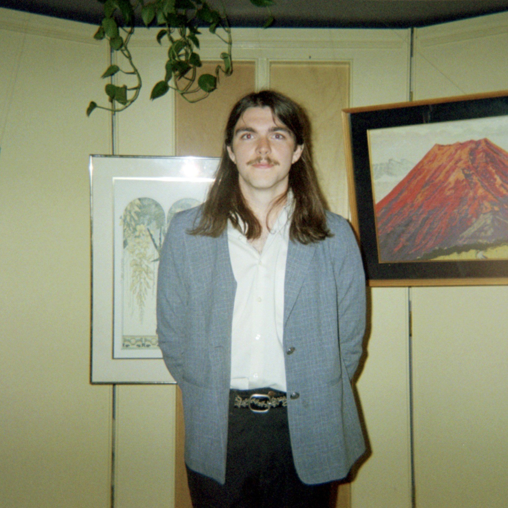

Connor
Bass
I was born in Renton, Washington and grew up in a tone deaf but musically infatuated household. Radio blasting, CDs in, mtv on whatever it was music was on in our house. I was forged by the rock and roll top 40 of 99.9 kisw and the neurotic alt rock of 107.7 the end. I love it all and growing up outside of seattle, grunge left a significant impact in me. Now im inspired by the world in front of me and the uncertainty that it shows me. Tall task trying to make music to capture that, but we try our best.